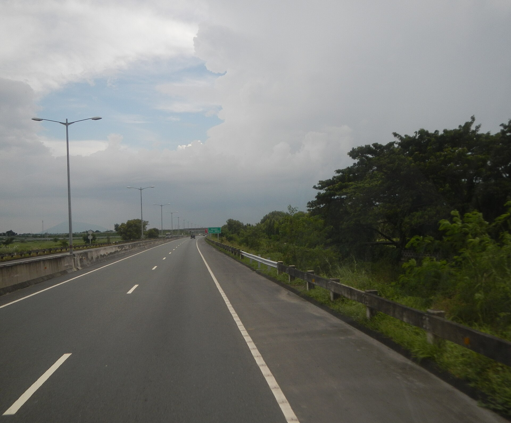

Road / corridor01 / 03Central Luzon Link Expressway
Build the route on a shared ground truth.
Corridor topography, alignment and aerial data for one of the Philippines' defining mobility projects.
Illustrative concept card. Replace with approved project scope and metrics.